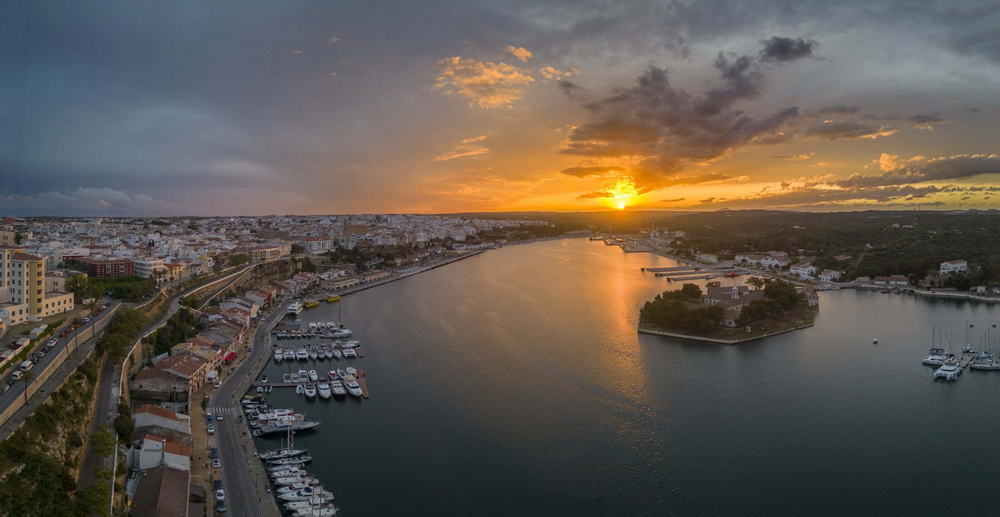
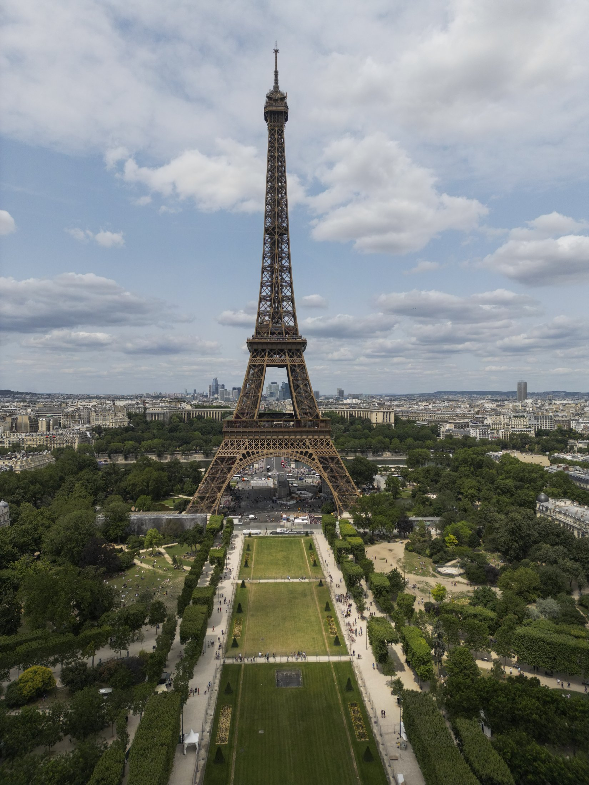
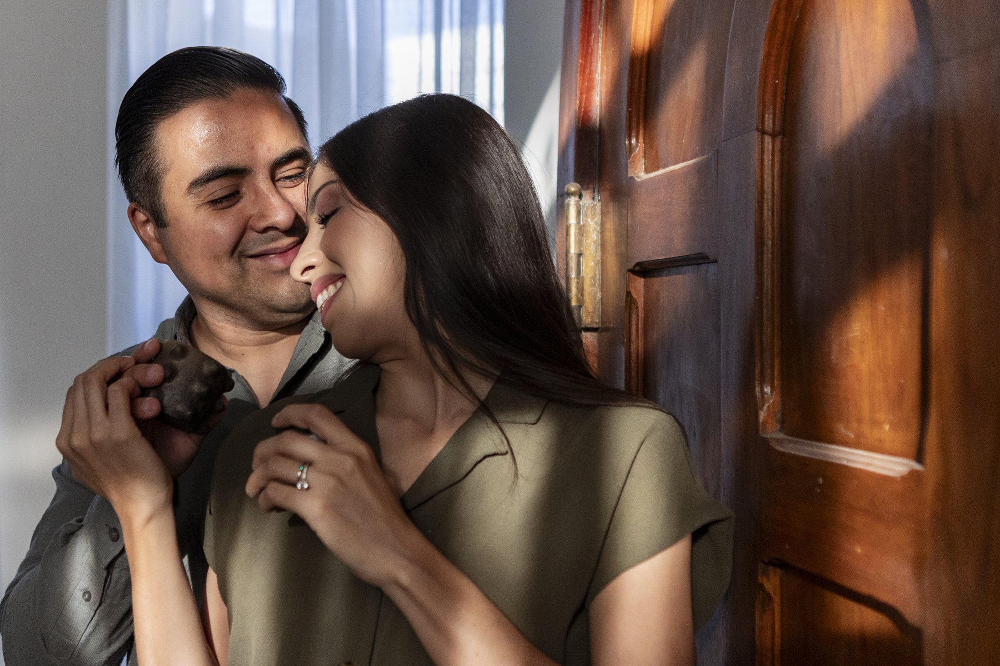

FOTOGRAFÍA Y VÍDEO
Material para vuestro equipo
Imágenes terminadas para que vuestro equipo o agencia las utilice en vuestra web, comunicación y campañas, con los usos acordados para el proyecto.

Imágenes para mostrar lo que hace especial a cada hotel y el lugar que lo rodea.
DESCUBRIR LA PROPUESTACada estancia tiene una historia: el espacio, las personas, la mesa y todo lo que espera al salir.
Propongo producir fotografía y vídeo que conecten vuestros hoteles con sus destinos y ayuden al viajero a imaginar su experiencia. Podemos empezar con los establecimientos y temporadas que vuestro equipo quiera impulsar.
Las imágenes de esta página pertenecen a mi archivo y son ejemplos de mi trabajo; no muestran necesariamente establecimientos de Eurostars.

Crear una historia visual para un hotel elegido junto a vuestro equipo: sus espacios y servicios, la gastronomía, las personas que lo hacen posible y los lugares que el huésped puede descubrir cerca.
Después, la misma idea se puede adaptar a otros destinos y marcas de Eurostars Hotel Company, respetando el carácter de cada establecimiento.
Elegimos el enfoque, la duración y el alcance con vuestro equipo, según las necesidades de cada hotel.
Imágenes terminadas para que vuestro equipo o agencia las utilice en vuestra web, comunicación y campañas, con los usos acordados para el proyecto.

Desarrollo creativo y producción con vuestro equipo: desde la idea hasta las piezas finales, con modelos y colaboradores locales cuando el proyecto lo requiera.

Soy Juan Aizpuru, fotógrafo y realizador con base en Bilbao. Trabajo con un equipo profesional en proyectos de viajes, personas y experiencias, y puedo desplazarme a los hoteles que elijáis.
Las localizaciones, el tiempo de producción y la licencia se acuerdan según el proyecto. Mantengo la autoría y la propiedad del material.
CONOCER MI TRABAJOMe gustaría conocer vuestros planes y explorar una colaboración adaptada a lo que necesitéis.
PROPONER UNA REUNIÓN